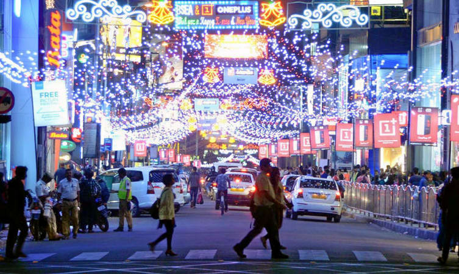
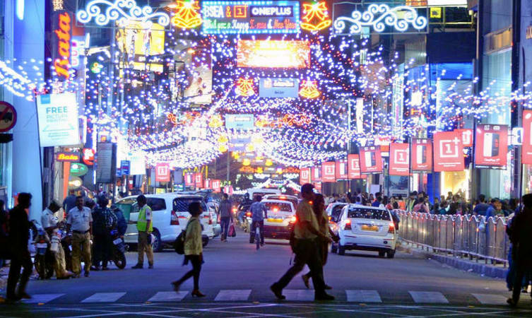
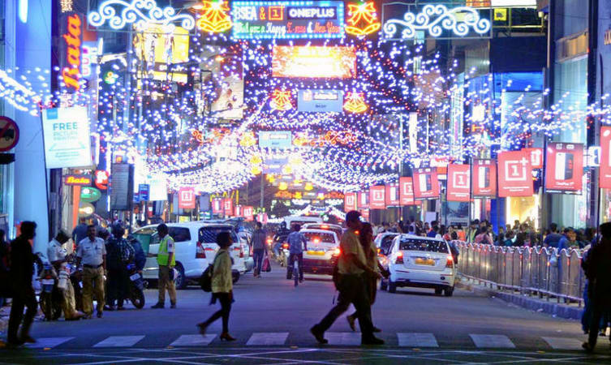

Cosmopolitan Bengaluru (formerly Bangalore) is one of India's most progressive and developed cities,
blessed with a benevolent climate, a modern metro system, and a burgeoning drinking, dining and shopping scene.
Its creature comforts are a godsend to the weary traveler who has done the hard yards off the beaten track, and
it's a great city for mixing with locals in craft-beer joints or quirky independent cafes.
Though there are no world-class sights, you'll find lovely parks and striking Victorian-era architecture.
The past decade or so has seen a huge surge of development, coupled with traffic congestion and rising pollution levels.
But the central district (dating back to the British colonial years) remains little changed, and the landmark corporate
headquarters and business parks of the city's booming IT industry are mostly in the outer suburbs.
